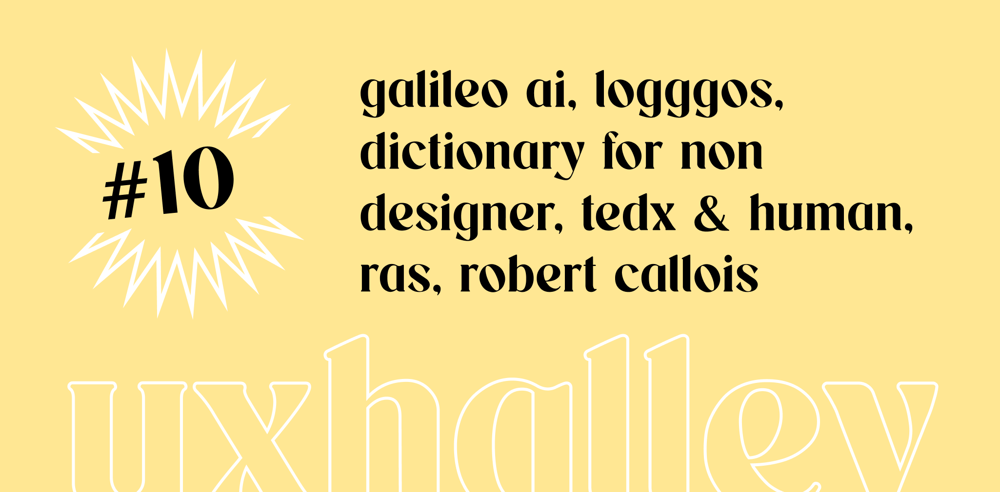

UX Halley, newsletter per designer
uxhalley, edizione #10
13 febbraio 2023 — UX Halley: una newsletter bisettimanale che raccoglie news e links utili sulla UX. Le regole sono semplici: max 5 minuti di lettura; se ti interessa, lo approfondisci; se ti piace, lo condividi; a prescindere ci vediamo tra due settimane. Facile facile.
Immagine di copertina dell'edizione di UX Halley, newsetter per designer
Link per designer suggerito nell'edizione di UX Halley, newsletter per designer
termini ux
C'è chi lo sa, e ci fa attenzione, e chi invece lo scopre sulla propria pelle: la #comunicazione è fondamentale, soprattutto in un "mondo", come quello del digitale, dove ci sono terminologie diverse, con significati simili, interpretazioni personali e troppo spesso delle rischiose incomprensioni. Ma ho la soluzione, guarda qui sotto.
Link per designer suggerito nell'edizione di UX Halley, newsletter per designer
humans not users
Chi mi segue sa che sto organizzando il TEDxFiumicino: da oggi in ogni edizione di UX Halley troverai anche un video di un #TEDx. Come non poter cominciare con questo interessantissimo speech di TEDxYoungstown in cui si parla di #humancenteredesign? Fammi sapere che ne pensi nei commenti!
Link per designer suggerito nell'edizione di UX Halley, newsletter per designer
loghi vettoriali
I #meme dei loghivettoriali.doc li conosciamo tutti, e forse tu fai parte di quelle persone che l'hanno anche ricevuto un file del genere. Facciamoci una risata, ma quando abbiamo finito di ridere c'è un tool online che a mio avviso può risolvere i casi come questo. Dagli uno sguardo e, che rimanga tra noi, i loghi non sono moltissimi, se carichi il tuo è un buon modo di farsi notare!
Link per designer suggerito nell'edizione di UX Halley, newsletter per designer
il RAS
Questo argomento l'ho scoperto da Dario Vignali credo anni fa ormai. Un tema interessantissimo che tocca temi come #anatomia, #medicina, #psicologia. Il RAS, detto anche sistema reticolare attivatore ascendente, è qualcosa che, dopo che avrai letto di cosa si tratta, dirai "ahhhhhhhh, adesso ho capito!". Niente altri spoiler, ti lascio alla lettura.
Link per designer suggerito nell'edizione di UX Halley, newsletter per designer
i giochi e gli uomini
Hai mai sentito parlare di Agon, Alea, Mimicry e Ilinx? Sono termini particolari, strani ma curiosi. Non sono #pokemon, non sono mobili dell'#ikea, ma sono 4 categorizzazioni del mondo del gioco (a 360°) che Robert Callois, psicologo e scrittore dei primi del '900, ha identificato e raccolto nel suo libro.
Link per designer suggerito nell'edizione di UX Halley, newsletter per designer
cosmico
Cosmico crede nel lavoro da remoto e nel fatto che #designer, #developer, #marketer e in generale chi si occupa di digitale, non debba avere un legame necessario con un ufficio o un luogo fisso. Non solo: è vero che si può lavorare da remoto, ma stare insieme è comunque preziosissimo. Per questo Cosmico organizza dei co-living super fighi per fare #smartworking in posti incredibili.
Link per designer suggerito nell'edizione di UX Halley, newsletter per designer
galileo.ai
Il momento è arrivato. Noi designer smetteremo di lavorare, di essere utili, di percepire uno stipendio. Torneremo nei campi, i robot ci ruberanno il lavoro! Niente di tutto questo ovviamente, ma c'è nell'aria una rivoluzione, un qualcosa che sta cambiando, grazie al potere dell'#AI. Galileo è stato lanciato da pochissimo e già fa scalpore. Non hai curiosità di sapere di cosa si tratta?